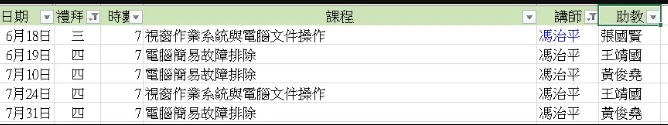

2025.0618-2025.0731 09:00-17:00
windows 學習
課程廣播 -- 手加連結 https://meet.google.com/pno-snag-qyy
教師郵箱 cp.ifong4@gmail.com

電腦主機、網路連線、無法開機、時常當機、處理速度緩慢
先期課程：中英打, Word, Excel, PointPoing, Windows, Cloud
教師簡介
w1 0618 Excel (google sheet) A
w2 0619 windows 系統及安全
w3 0710 電腦發生故障之前應先備份
w4 0724 windows 作業系統
w5 0731 故障排除